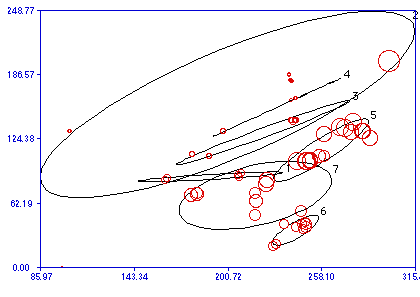
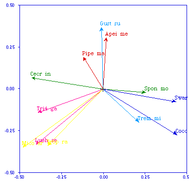
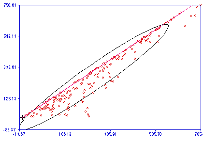

---
title: Diagram types in the R Package
---
The R Package will not pretend to replace your drawing or plotting program. Nonetheless, here are samples of the types of diagrams that it can draw, along with their unique properties.
If you would like to learn how to do ordination biplots easily and effortlessly, you should check out Pierre Legendre's
Biplot guide in French 
- PICT Window. Paste any PICT from the clipboard or open any PICT file. Useful for side-by-side comparisons between your diagram and a plot from another program.

- X-Y-Z Plot. Plot any variable along two orthogonal axes, optionally using a third variable as a label, symbol indicator, 95% ellipse clustering criterion, "bubble" plot (circles of diameter proportional to the Z value), arrow or color indicator. These drawing routines were originally written by Marc Dufrêne as the "IDPlot" program.

The first figure represents the X-Y coordinates of Carabid beetles sampling stations in Belgium. Z-bubble variable is altitude, and the ellipses group the stations by biogeographical regions.
The second figure is a classic ordination biplot of axes I and II of several tree species found in a tropical forest. Notice the user-controlled colors and arrows, as well as the proportional axes.

- Shepard diagram. This is a X-Y plot to compare two distance matrices: along the X axis, one would plot the distances in ordination (reduced) space, while the original distances would be plotted along the Y axis. The magenta line represents the 1:1 line. If the reduced space represents exactly the original space, then all distances are plotted along that line. Usually, though, reduced space represents less than the original space and distances are plotted below the 1:1 line, as is the case here: the distance between object A and object B is shorter in reduced space than in original space. Sometimes, for instance when there are negative eigenvalues in reduced space, the distance in original space is shorter than in reduced space. In that case, points would be plotted above the 1:1 line. In all cases a 95% ellipse is drawn around the points, which helps evaluate the closeness of the representation.
This figure shows a random sample of 200 distances (out of a possible 561), comparing one-dimensional reduced representation vs. bi-dimensional original geographical distance.
Last updated on Saturday, March 30, 2013 by Philippe Casgrain
Created on Monday, September 21, 1998